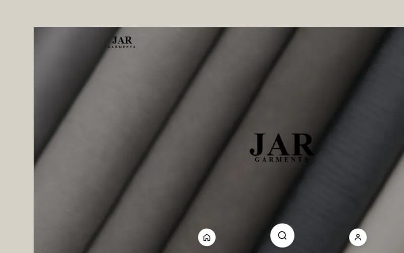
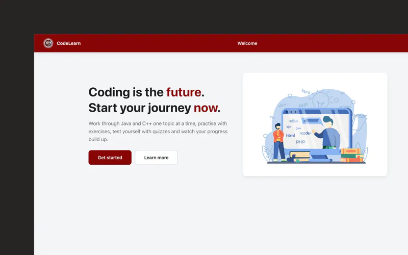
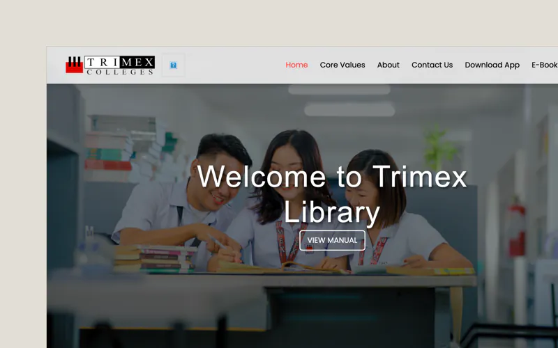

Available — full-time & freelance
John Vincent Pangilinan
Junior Software Engineer & Web Developer
I build full‑stack web systems, from database to deployment — so far an e-commerce store with GCash payments, a library system with RFID attendance, and a learning platform for Java and C++.
whoami
john-vincent-pangilinan
cat role.txt
Junior Software Engineer · Web Developer
ls projects/
jar-garments/ codelearn/ trimex-library/
cat stack.txt
PHP · Laravel · JavaScript · React · MySQL · Tailwind
echo $STATUS
available — full-time & freelance
Selected work
Three systems, each written up the way I’d walk your team through it: the problem, how it was built and what changed.
-

~/work/jar-garments
JAR Garments
E-commerce system with GCash payments, order tracking and monthly & yearly sales analytics for a custom-garment business.
- PHP
- MySQL
- JavaScript
- Bootstrap
- GCash API
freelance · 2025
-

~/work/codelearn
CodeLearn
Learning platform for Java and C++: 76 lessons, timed quizzes graded on the server, an in-browser code runner and progress tracking.
- PHP (MVC)
- MySQL
- JavaScript
- JDoodle API
capstone · 2024–25
-

~/work/trimex-library
Trimex Library System
Library management system with RFID attendance, school Gmail sign-in, online book reservations and usage analytics.
- PHP
- MySQL (PDO)
- JavaScript
- RFID
ojt · 2025
About
Good systems feel obvious.
Getting them there is the job.
I’m a junior software engineer and web developer from Biñan, Laguna, with a degree in Information Technology from Trimex Colleges. I build complete web systems: the database, the back end, the screens people use and the deployment.
So far that has meant real systems for real users — an e-commerce store that takes GCash payments for a garments business, a library system with RFID attendance for my college, and a learning platform for Java and C++ built as our capstone.
I care about the unglamorous parts that keep a system running: validation, security, clean data and code the next developer can read.
const john = {
role: "Junior Software Engineer",
location: "Biñan, Laguna, PH",
education: "BS Information Technology, Trimex Colleges",
honors: ["Dean’s Lister 2024"],
languages: ["English", "Filipino"],
interests: ["system design", "finance & markets", "history"],
available: true,
};How I work
My pipeline, from idea to launch.
-
Define
01Pin down the problem, the users and the requirements before any code is written.
-
Design
02Plan the system: the database schema, the modules and the flows that connect them.
-
Prototype
03Build a working version early, so feedback comes from something real.
-
Test
04Validate every input, check security and fix what breaks with real users.
-
Deliver
05Deploy it, document it and hand it over ready to run.
Tech stack
What I build with, day to day.
- PHP Language
- JavaScript Language
- HTML5 Markup
- CSS3 Styling
- Laravel PHP framework
- React UI library
- Tailwind CSS CSS framework
- Bootstrap CSS framework
- MySQL Database
- Git Version control
- GitHub Collaboration
- VS Code Editor
- XAMPP Local server
- Linux Operating system
-
also
const also = ["MVC", "PDO & prepared statements", "REST/JSON APIs", "Auth & sessions", "GCash payments", "RFID"];
// hover — or tap — a tile to see its colour
Experience
The one-page version, for recruiters. Roles, education and skills on a single page.
# software & web development
-
—
Web developer @ JAR Garments · Freelance
Built a custom e-commerce system — design selection, cart, GCash payments, order tracking and sales analytics — to handle real customer transactions.
-
—
Web developer (OJT) @ Trimex Colleges, Biñan
Built the library management system: RFID attendance logging, school Gmail sign-in, online book reservations and analytics on library usage.
-
—
System developer, capstone @ Thesis project · Trimex Colleges
CodeLearn, a learning platform for Java and C++. Contributed to system design, coding, testing and the technical presentation.
# education
-
A.Y. 2024–2025
BS Information Technology @ Trimex Colleges, Biñan
Dean’s Lister, 2024. Coursework in web development, database management, software engineering, and systems analysis & design.
Contact
Let’s build something that lasts.
# for recruiters & hiring teams
Hiring a junior software engineer or web developer?
I’m looking for junior software engineer and junior web developer roles — on-site around Laguna and Metro Manila, hybrid or remote. Everything you need for a first screen:
# for clients
Need a system built?
Tell me what it needs to do, who will use it and when you need it. I’ll reply within a day with a few questions and a suggested next step.
elsewhere: github (opens in a new tab) linkedin (opens in a new tab) telegram (opens in a new tab)
local time in Biñan — GMT+8